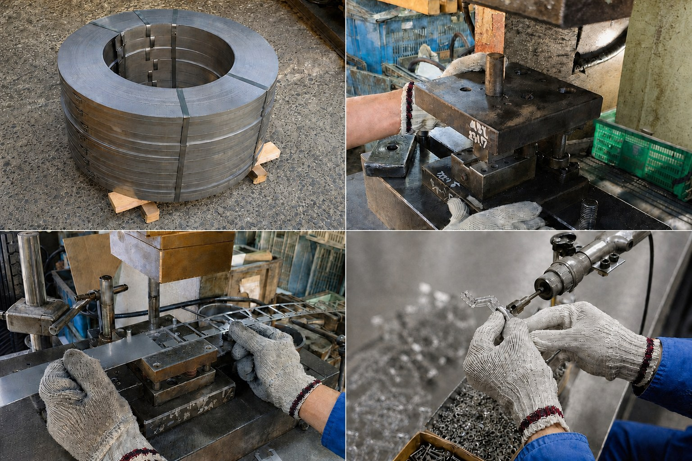
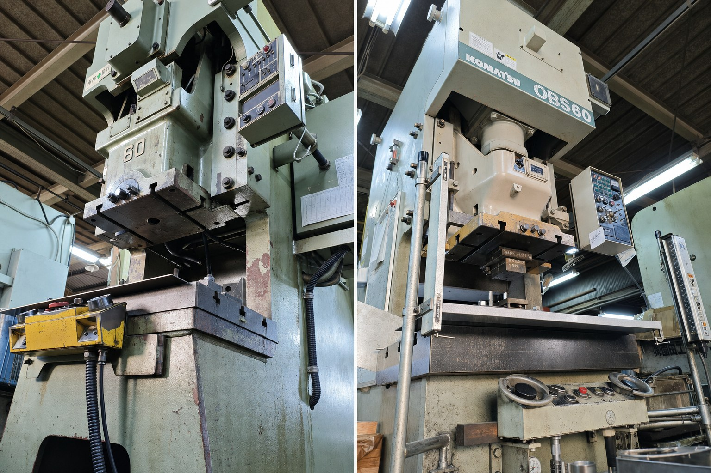
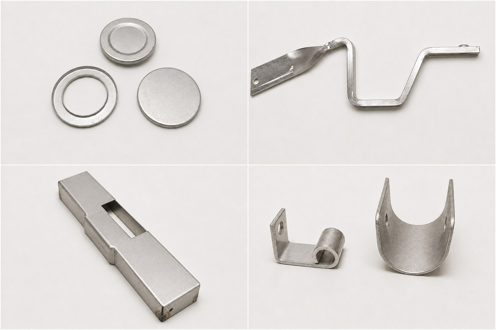

01 / Service
事業内容
ステンレス・鉄・アルミなどの各種金属加工に加え、プレス加工後の小部品・金物へのスポット溶接、組立、品質検査、梱包、発送まで対応。図面がない製品、型だけ残っている製品もご相談いただけます。
詳しく見るPrecision Metal Works
大阪・豊中で、建築金物や手に持てるサイズの金属部品を加工しています。
小ロットや、現物・既存金型からのご相談にも柔軟に対応します。
About Us
株式会社園田工作所は、1953年の創業以来、金属加工を通じてお客様のものづくりを支えてきました。110t以下のプレスを多く備え、建築金物を中心とした金属部品の加工や、数百個程度からの小ロットにも小回りよく対応します。
会社概要を見る →
01 / Service
ステンレス・鉄・アルミなどの各種金属加工に加え、プレス加工後の小部品・金物へのスポット溶接、組立、品質検査、梱包、発送まで対応。図面がない製品、型だけ残っている製品もご相談いただけます。
詳しく見る

Company
1953年創業、1967年株式会社設立。大阪府豊中市で、誠実な仕事を積み重ねています。
Contact
委託先が閉業して金型だけ残っている、製品しか残っていない、小ロットで頼みづらい。そんな時も、まずは気軽にご相談ください。